Hospital Ward Divider
Ceiling track system for patient privacy zones, treatment bays, and multi-bed room separation.
Complete project divider system
Space Divider Solution for Medical and Commercial Interiors
AOOTUS supplies the hospital curtain track as a complete system for wholesale, OEM, and project buyers. Track profiles, runners, end caps, connectors, suspension rods, positioning plates, brackets, and accessory sets are matched together for practical project quotation.
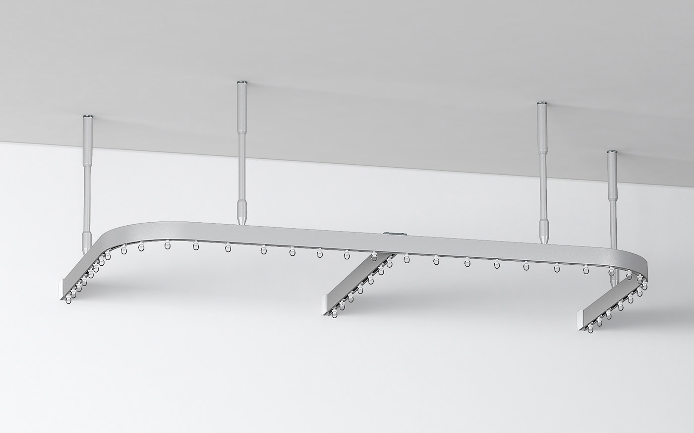
System position
The value is in the matched package. Buyers can source the full track system from one supplier instead of confirming separate parts one by one.
Track, runners, hooks, rods, connectors, end caps, and installation parts are quoted together.
Straight, curved, L-shape, and U-shape layouts can be discussed by drawing or room plan.
Suitable for hospitals, clinics, care centers, beauty studios, and commercial interiors.
Length, finish, carton packing, accessory set, and label requirements can be adjusted.
Applications
Scene images show typical installation environments. English notes below each image explain the buyer-facing application, so the page does not rely on labels inside the image itself.
Ceiling track system for patient privacy zones, treatment bays, and multi-bed room separation.
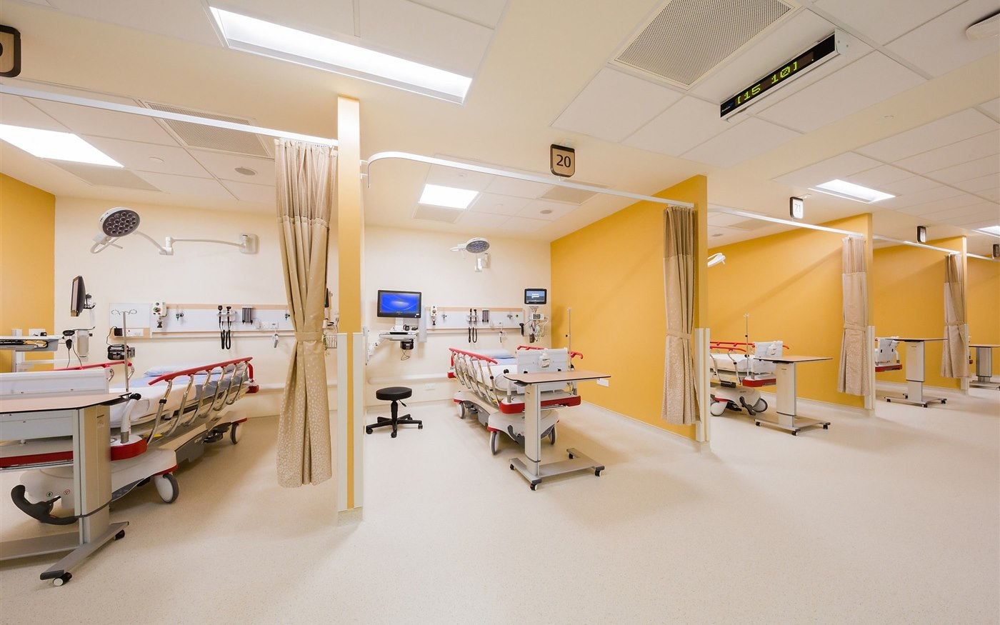
Clean divider solution for consultation rooms, examination areas, and flexible medical spaces.
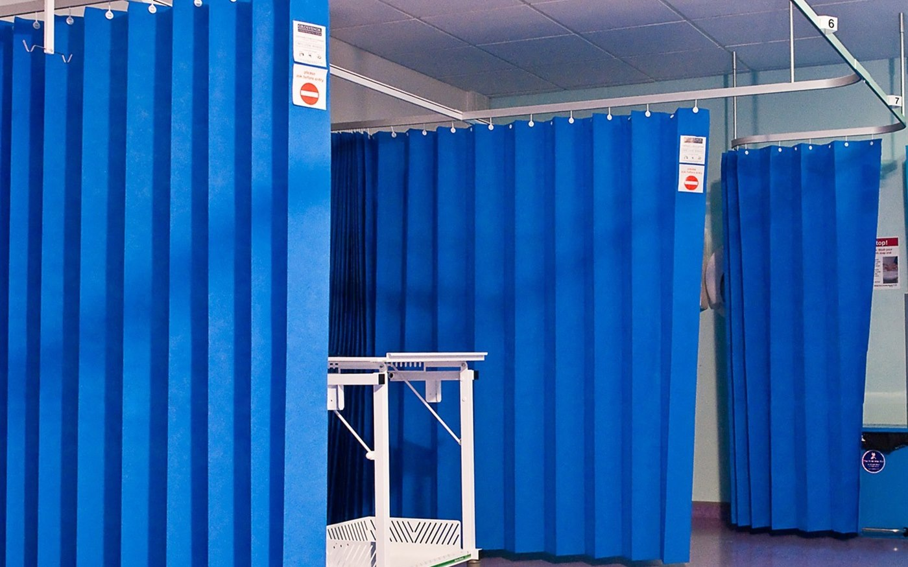
Curved and straight track layouts can be matched with curtains, hooks, runners, and suspension parts.
Product details
The images may include factory reference markings. Use them as visual support while the English descriptions define the quotation logic for international buyers.
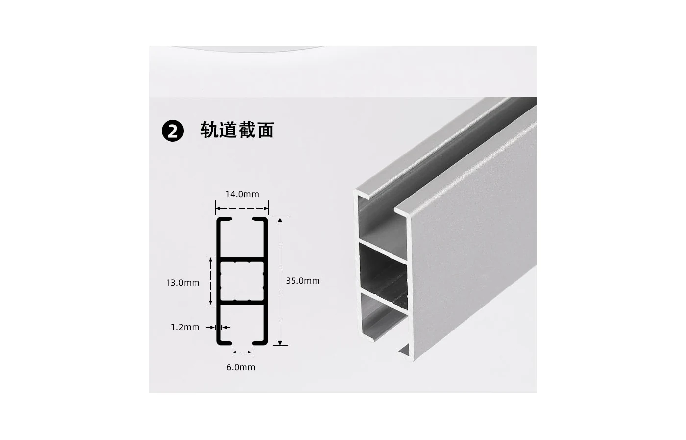
Main track profile for smooth runner movement. Profile selection is matched with curtain weight, span, and installation method.
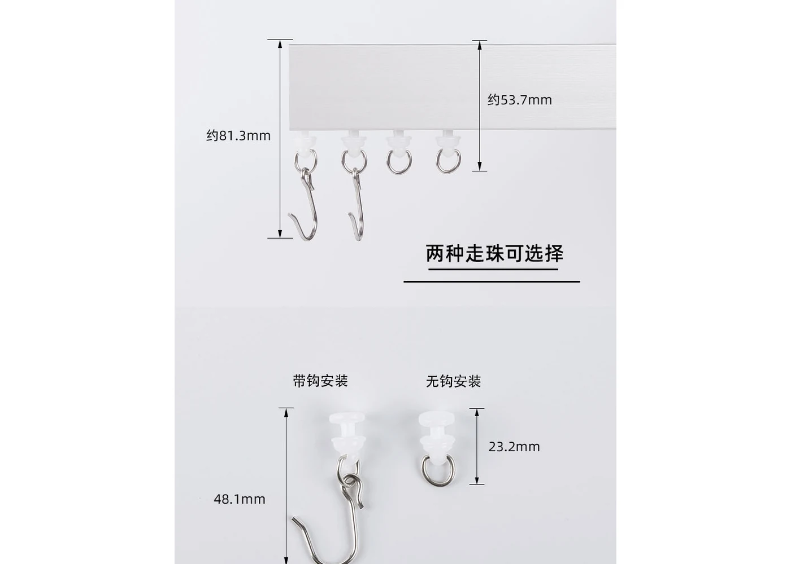
Runners, carriers, and hook points are selected to support daily curtain movement and replacement orders.
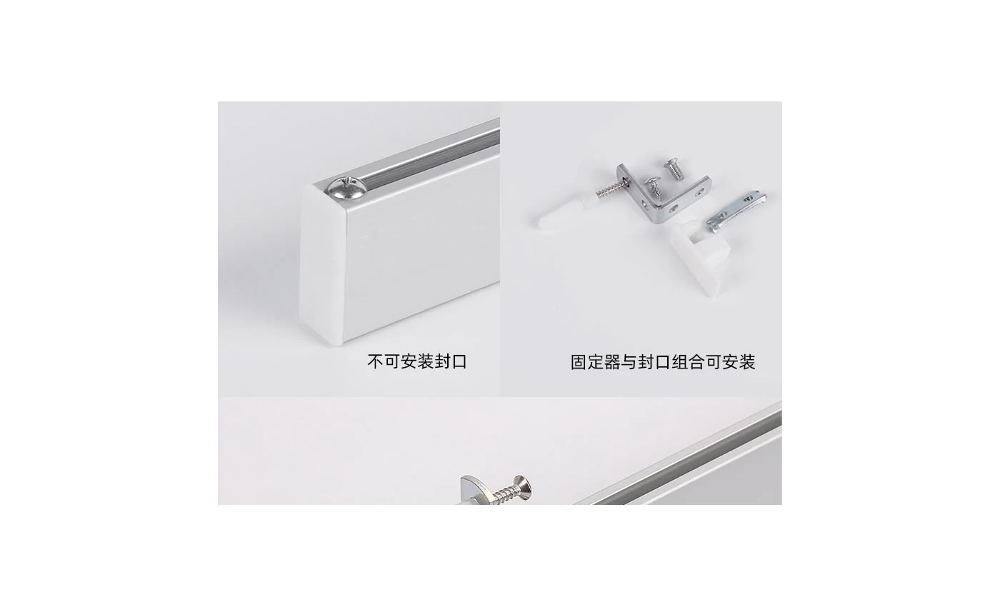
End covers finish the track run and help keep the system clean, closed, and ready for site installation.
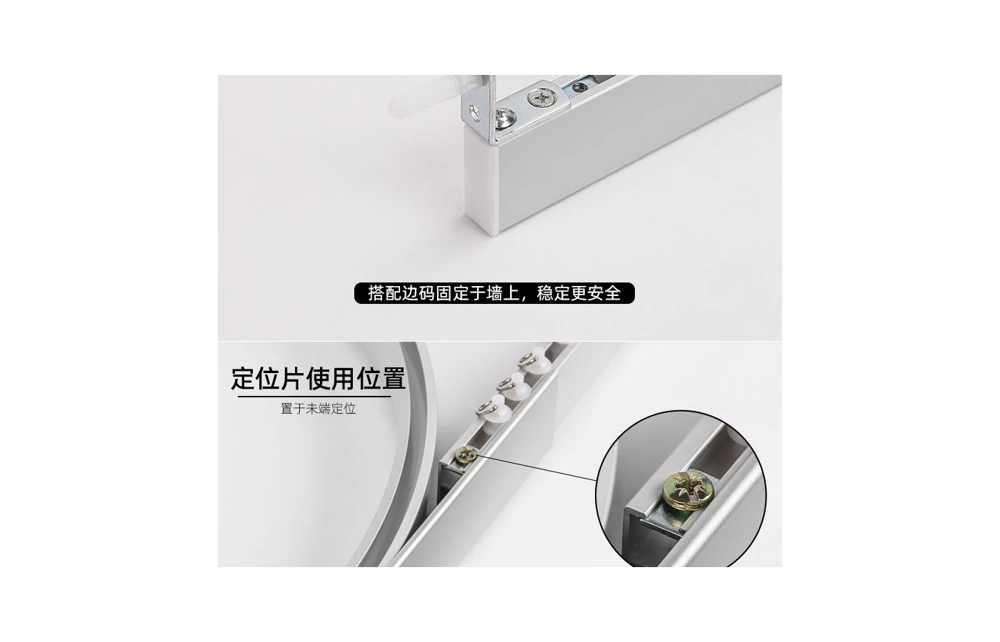
Positioning plates support track alignment and help installers control placement in ceiling or suspended layouts.
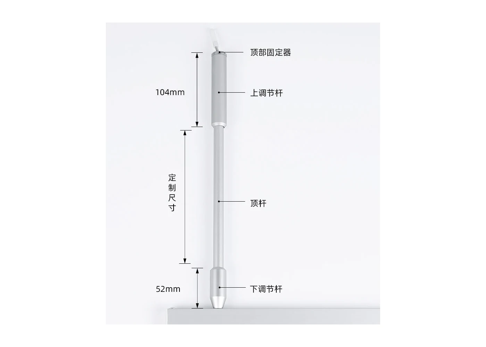
Suspension parts are used when the track needs a drop from the ceiling or extra support across a room divider span.
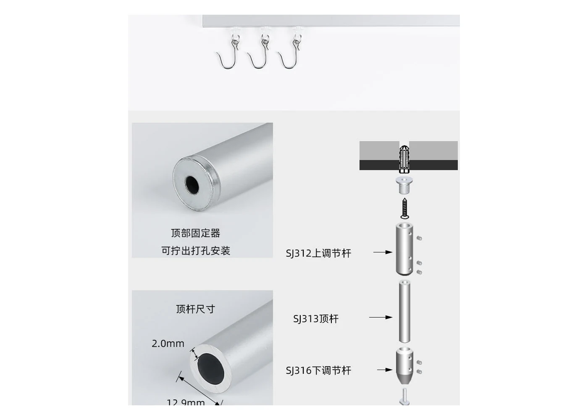
Adjust bars, fixed points, and rod fittings are supplied as matched hardware for stable installation.
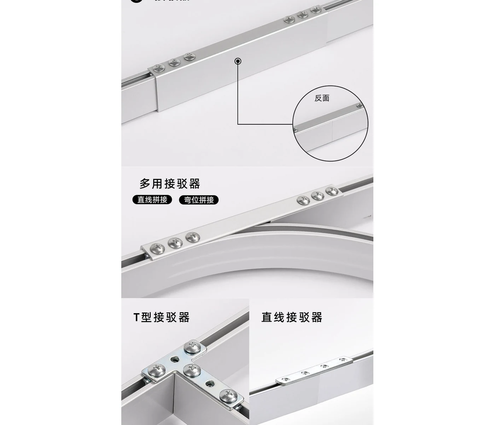
Used for straight extensions and curved transitions when one connector type needs to support multiple layout directions.
Supports branch layouts and room divider intersections where track runs need to meet at a controlled angle.
Joins track sections into longer runs for rooms that need extended coverage and stable alignment across spans.
Installation planning
For project quotation, the track layout and fixing method are confirmed together. The visual diagrams support discussion, while the English notes explain the selection points.
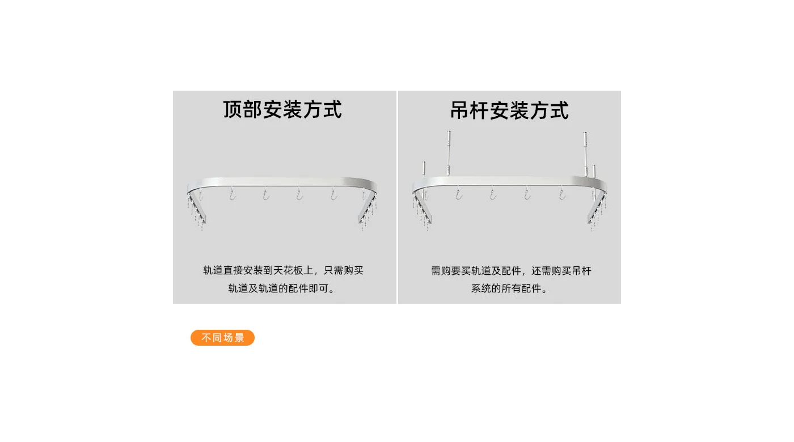
Choose direct ceiling fixing, suspension rod support, or combined support based on ceiling height, room layout, and curtain weight.
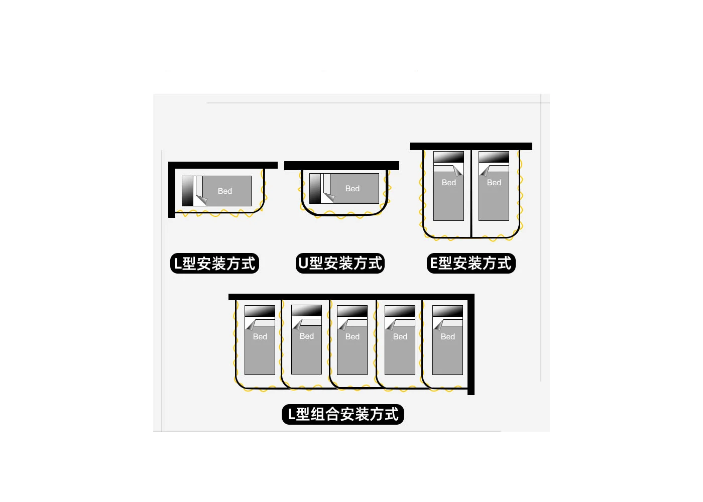
Common layouts include straight runs, L-shape corners, U-shape bed surrounds, and curved divider routes.
Accessory reference
The reference image shows available system parts for purchasing discussion. For international buyers, the key point is to confirm the accessory set in English by project need.
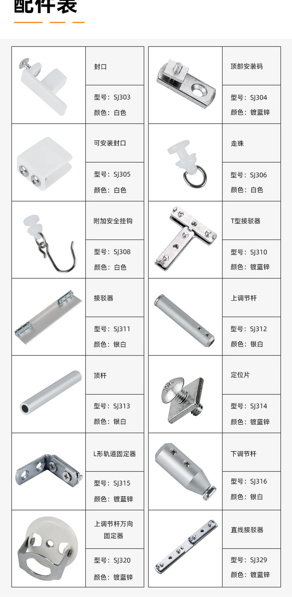
Specification guide
Use this table to prepare the first inquiry. Final specifications can be adjusted for project drawings, sample matching, or OEM packing.
| System Type | Complete hospital curtain track system for privacy divider applications |
|---|---|
| Main Material | Aluminum alloy track profile with compatible plastic or metal accessory options |
| Mounting Type | Ceiling mounted, suspension mounted, or combined support by project condition |
| Layout Type | Straight, L-shape, U-shape, curved, or custom room layout by drawing |
| Included Components | Track, runners, hooks, end caps, connectors, positioning plates, suspension rods, adjust bars, and fixing parts |
| Finish Options | White, silver, or custom finish based on order requirement |
| Buyer Type | Distributors, importers, contractors, hospital project suppliers, and OEM customers |
OEM / Project Support
Send room layout drawings, required track length, curtain style, installation method, or reference samples. We can prepare matched system suggestions for wholesale and project supply.
Project inquiry
Send your layout, quantity, mounting method, and accessory requirement. We can reply with matched system suggestions and quotation details.